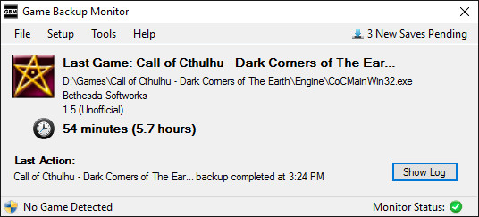

Game Backup Monitor

Automatically backup your saved games with optional cloud support.
Cloud support requires any service that offers a folder synchronizing client.
Latest Information
Important News
- v1.01 has been released!
Notices
- The manual has been updated to include features added in v1.01.
- Game Backup Monitor may not be fully compatible with the new Dropbox Smart Sync feature. If you use this feature, be sure the Smart Sync setting for your GBM backup folder is set to Local and not Online Only.
Updated March 31, 2017
Credits and Awards
Game Backup Monitor wouldn't be possible without these free products and services.
Game Backup Monitor is certified 100% malware free by Softpedia.